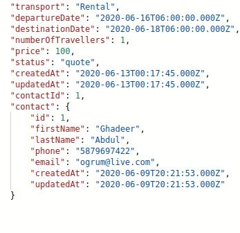
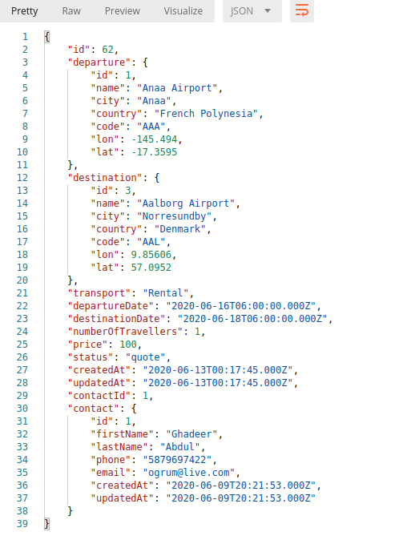

Wetbat Project
Table of Contents
1 Wetbat Project
1.1 Objective
Develop RESTful app to manage airflight quotes
1.2 Implementation choices
1.2.1 Backend: FeathersJS + sequelize ORM + MySQL/MariaDB
For the API layer I'm going to use FeathersJS which supports JSON and realtime communication via Socket.io – it also offers a cli which makes it easy to generate services/endpoints and processing hooks.
We have a choice between multiple database adapters, but I decided to go with sequelize which is an ORM that supports Postgres, MySQL, MariaDB, SQLites and Microsoft SQL. It also provices a cli for managing migrations, model creation, seeding, etc.
I configured it to run with a MariaDB Docker image – which keeps a volume in the db/ directory for data persistance across hosts.
1.2.2 Frontend: ReactJS + Material Dashboard Pro components
I decided to use some pre-styled components from Material Dashboard to save time, as well as other packages like react-datetime for time selection and sweetalert for alerts and confirmation dialogues. As well as the autocompelete from @material-ui/lab.
I used the new Context API instead of Redux for global state management.
1.3 Data achitecture
The API exposes three endpoints:
- /contacts : customer contact info
- /quotes : quotes associated with customers
- /airports : a list of airports
We know contacts has a one-to-many relationship with quotes (one user can request multiple quotes), this means the quotes table will have a "contactId" foreign key column for the associated contact.
We define this relationship in sequelize this way:
contacts.hasMany(models.quotes, { foreignKey: { allowNull: false }, onDelete: 'CASCADE' });
When the user requests a quote, we don't just want the user ID returned, as this means we'd have to make a second request to get the contact info, so we create a "hook" in Feathers that will populate the contact field with the complete contact info and pass it with the request.

For the /airports endpoint, I found a JSON file which contained a list of airports and their associated codes, as well as coordinates which we can use to seed a sequelize model.
The first time I attempted to do this I was presented with an error:
[~/wetbat/api]$ sequelize-cli db:seed:all *[master] Sequelize CLI [Node: 14.4.0, CLI: 5.5.1, ORM: 5.21.12] Loaded configuration file "config/config.json". Using environment "development". == 20200610011347-airports-from-json: migrating ======= ERROR: Incorrect string value: '\xC4\xB1' for column `basicdb`.`airports`.`city` at row 88
Apparently, Maria/MySQL only supports 3 byte utf8 characters by default for string fields, so I had to manually set the collate to `utf8_bin` for this particular model, although this should probably be set for all other models as well:
charset: 'utf8', collate: 'utf8_bin', // this is to allow for 4-byte utf-8 chars
The actual airport column on the quotes table contains only the airport code, however we can use another hook to return the associated info from the airports table in /quotes as well, so the frontend can display the coordinates in jVectorMap

1.4 Developer notes
This is the first time I've used third-party components in React. Although I have my own component library for VueJS built from scratch with Bootstrap5 styling, I didn't have such code on hand for React, so I had to rely on Material Dashboard to save time.
This lead me to learning about form validation in React; instead of doing validation by hand like I first did in CreateOrEditQuote.js, I used React Form Hooks for the contact form creation. Learning a bit more about React refs and the DOM in order to pass the refs to the inner components of Material Dashboard Pro components …
For the API, it was also my first time working with FeathersJS and sequelizer, although the same ORM concepts applies with my previous experience with django-rest-framework, I actually found the sequelizer cli and Feathers cli pretty fun to work with, and finally, you get the added benefit of working with ES6/NodeJS on both your frontend and backend – not to mention the potential of easily using Socket-io for realtime communication between clients, say for something like a chat client.
1.5 Build notes
The frontend and backend can be built simply by cding into their respective directories and either installing the npm packages locally and running npm start, or by deploying the dockerfiles provided into seperate containers:
cd frontend docker build -t myfrontend . # deploy the image to any port you want docker run -d -p 5000:5000 --name myfrontendcontainer myfrontend
The dockerfile for the backend also takes care of running the migrations and seeding the airports table. I've also created a seeder that uses faker to populate the db with some fake records.
2 Bugs, notes, TODO
2.0.1 Note
I spent most of the time on this project learning about the backend, react hooks, passing data between components, and conditional rendering. I was testing mostly against a MariaDB docker instance. Usually I use docker-compose on my vps which is a somewhat primitive method of orchestration, my understanding is that it can be converted to a kubernetes cluster with the "kompose" command, but I couldn't figure out how to do it – I ended up spending more time reading about Minikube than working on the final product!
Eventually I decided to swap out the MariaDB driver for sqlite in sequelizer (which only took one line) and then deploying the frontend an backend seperately to heroku.
2.0.2 TODO Caching
Some components use caching by storing into context, mainly the quotes and contacts tables. Other components like the autocomplete input for the airport name is fetched asynchronously when the user needs it.
Pagination is enabled by default on FeathersJS, and we also have a react table with pagination, we could use this to fetch a few pages of rows, and then fetch more as the user clicks next.
2.0.3 TODO The quotes table doesn't display after deleting a record
have to renavigate to quotes to redisplay again. This should probably be fixed by using history.push('/')
2.0.4 DONE Display last 5 quotes in svg map component on dashboard
The table above it is meaningless, but the markers on the map correspond to the destination airport's coordinates from the last 5 quotes.